Tech & IA
18:45
play_arrow
IA & créativité : les nouveaux outils qui transforment les studios panafricains
visibility42,8k vuesIl y a 2 jours
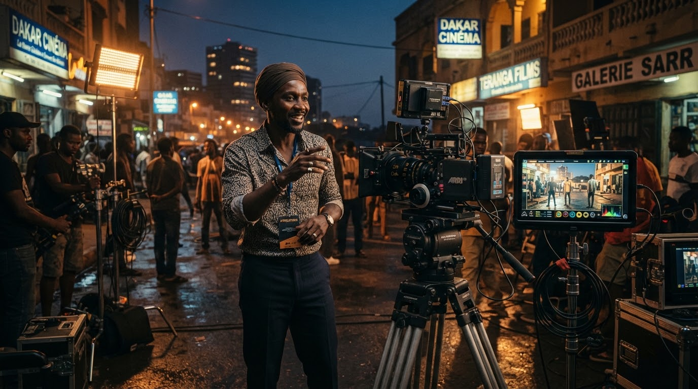
De Dakar à Lagos en passant par Abidjan, immersion auprès d'une génération d'auteurs et de techniciennes qui bousculent les codes de l'industrie cinématographique avec une narration résolument contemporaine.
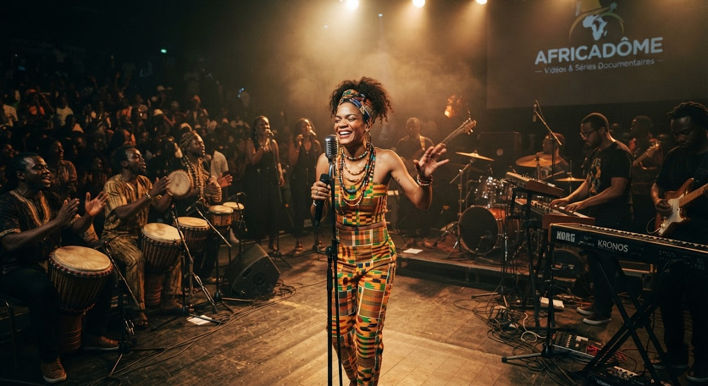
Musique 26:10 play_arrow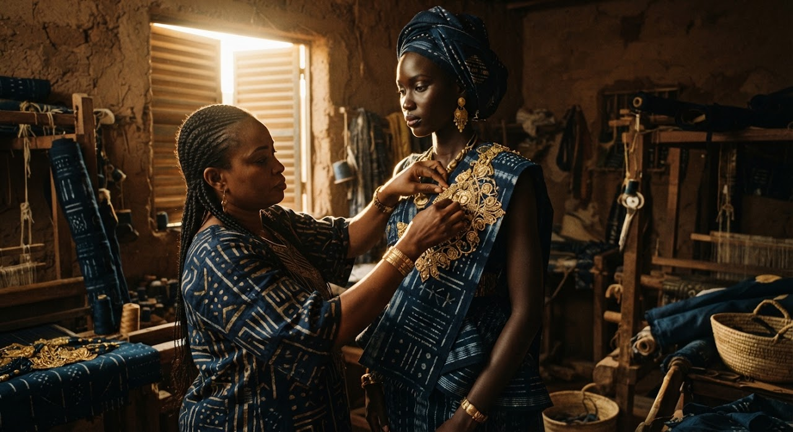
Culture & design 34:12 play_arrow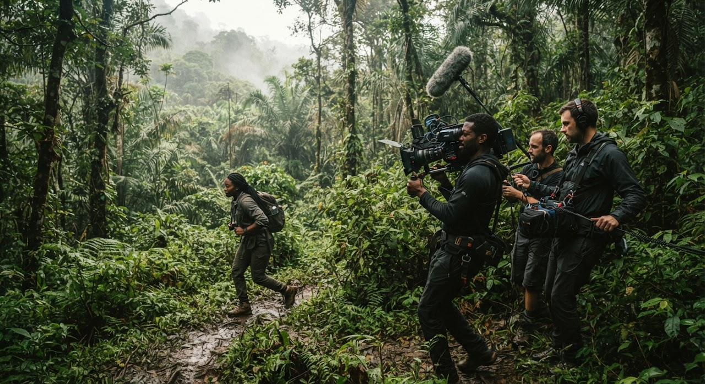
Cinéma 21:50 play_arrow Société
24:10
play_arrow
Société
24:10
play_arrow
 Musique
31:05
play_arrow
Musique
31:05
play_arrow
Aucune vidéo de cette catégorie dans les séries originales pour le moment.
Chaque mois, Africadôme met en avant quatre voix émergentes qui redéfinissent le storytelling visuel en Afrique.
Réalisateur de clips conceptuels et de courts-métrages afrofuturistes remarqués en festivals.
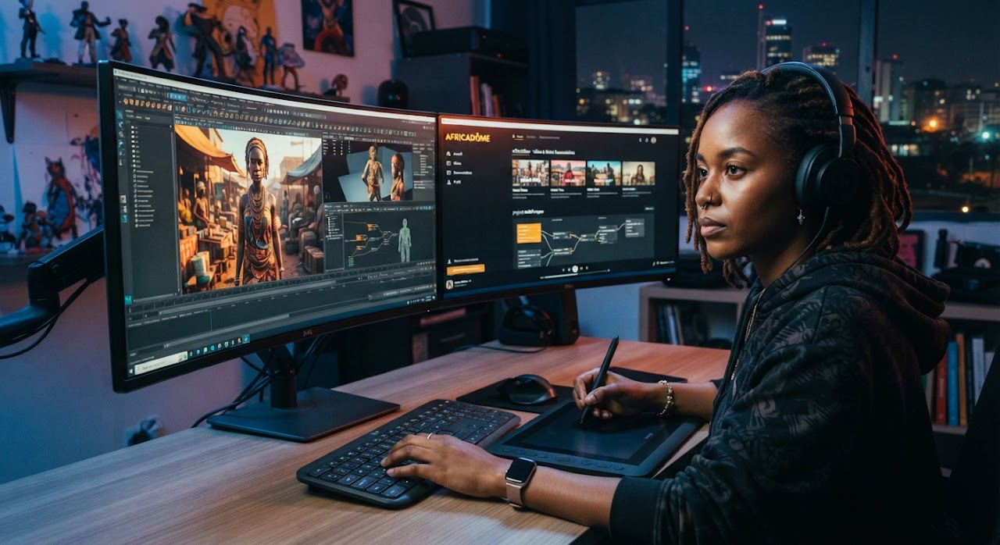
Pionnière de l'animation 3D hybride mêlant légendes masaï et graphisme cyberpunk contemporain.
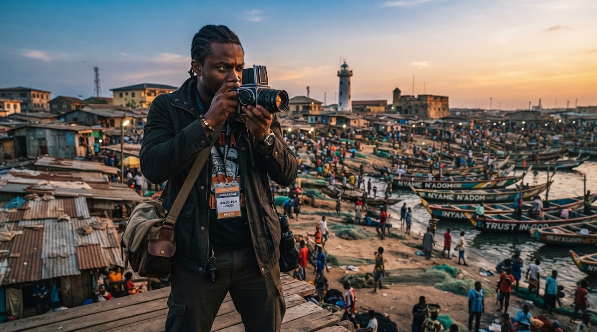
Documentariste d'investigation centré sur la transformation environnementale côtière et l'urbanisme.
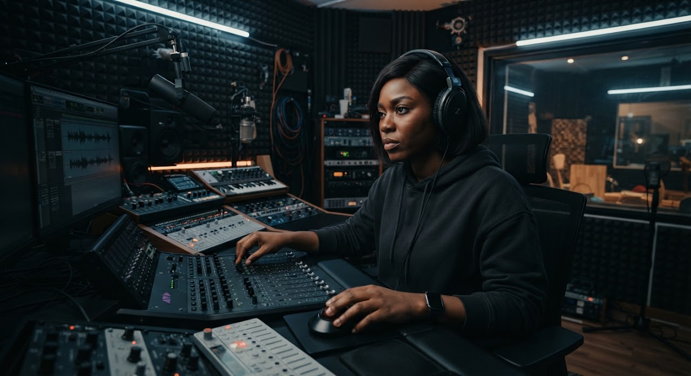
Compositrice et bruiteuse qui renouvelle le sound design des productions cinématographiques africaines.
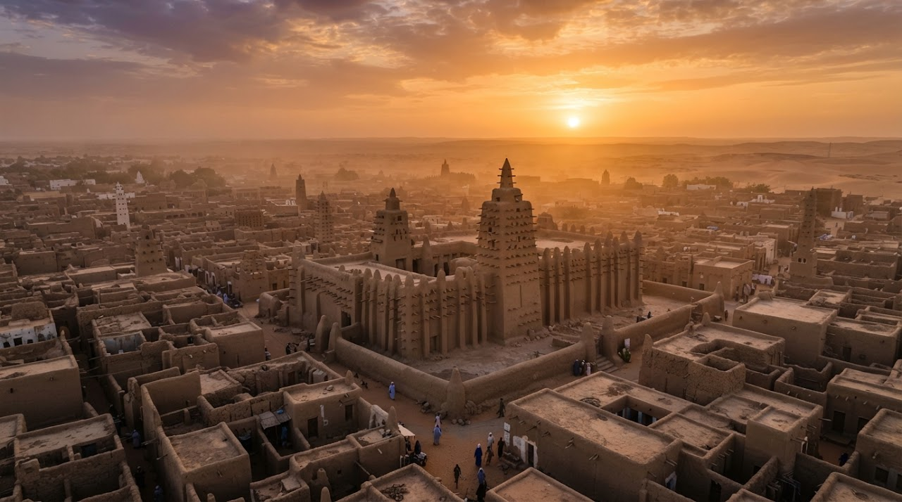
14:20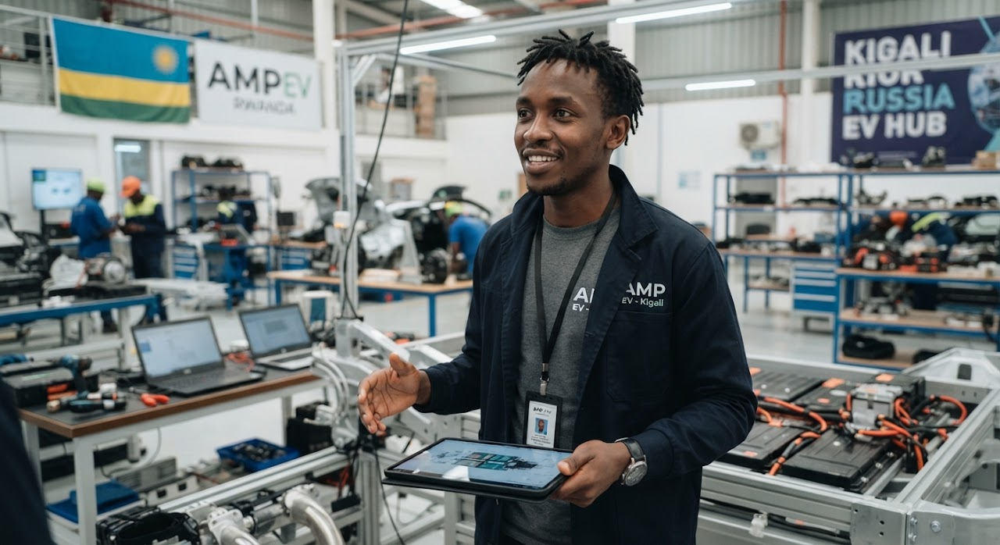
22:05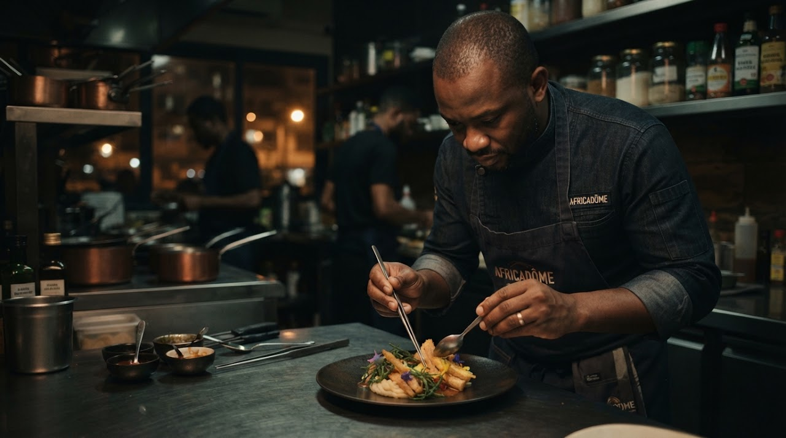
16:40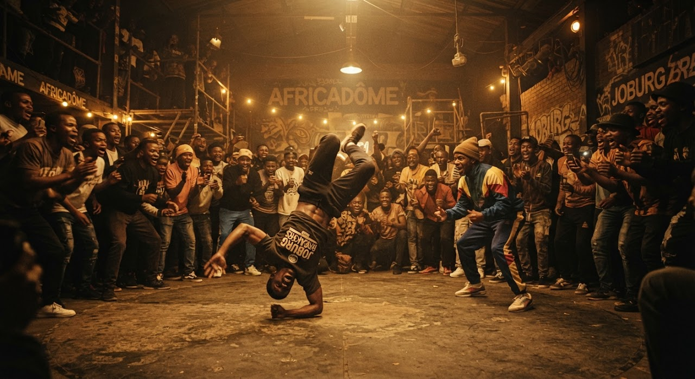
11:15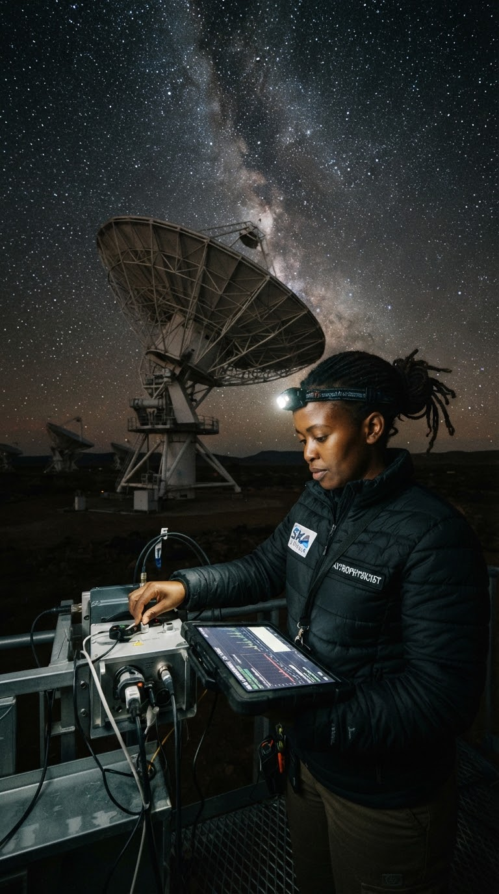
31:00Aucune vidéo de cette catégorie dans le palmarès cette semaine.
Dotation totale de 150 000 USD et accompagnement technique complet pour 6 projets documentaires inédits portés par des réalisateurs et réalisatrices résidant sur le continent africain.
Aperçu de démonstration — le lecteur vidéo sera branché sur votre plateforme d'hébergement (YouTube, Vimeo, serveur Africadôme…).